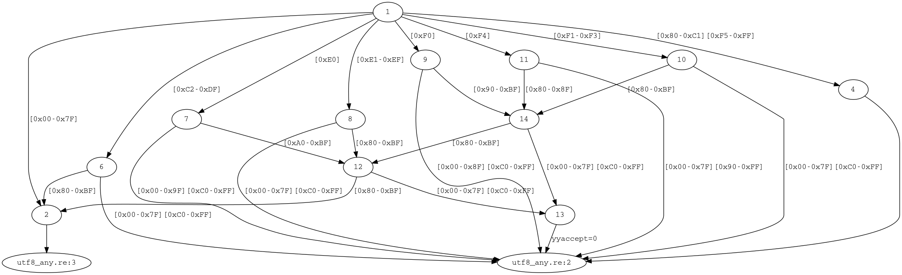

User manual (re2c)¶
A re2c program consists of normal code intermixed with re2c blocks and directives.
Each re2c block may contain definitions, configurations and rules.
Definitions are of the form name = regexp; where name is an identifier that
consists of letters, digits and underscores, and regexp is a regular expression.
Regular expressions may contain other definitions, but recursion is not allowed and each name should be defined before used.
Configurations are of the form re2c:config = value; where config is the configuration descriptor
and value can be a number, a string or a special word.
Rules consist of a regular expression followed by a semantic action
(a block of code enclosed in curly braces { and },
or a raw one line of code preceded with := and ended with a newline that is not followed by a whitespace).
If the input matches the regular expression, the associated semantic action is executed.
If multiple rules match, the longest match takes precedence.
If multiple rules match the same string, the earlier rule takes precedence.
There are two special rules: default rule * and EOF rule $.
Default rule should always be defined, it has the lowest priority regardless of its place and matches any code unit (not necessarily a valid character, see encoding support).
EOF rule matches the end of input, it should be defined if the corresponding method for handling the end of input is used.
If start conditions are used, rules have more complex syntax.
All rules of a single block are compiled into a deterministic finite-state automaton (DFA) and encoded in the form of a program in the target language.
The generated code interfaces with the outer program by the means of a few user-defined primitives (see the program interface section).
Reusable blocks allow sharing rules, definitions and configurations between different blocks.
Here is an example program that shows various aspects of re2c syntax:
// re2c $INPUT -o $OUTPUT -i
#include <assert.h> //
// C/C++ code
int lex(const char *YYCURSOR) //
{
/*!re2c // start of re2c block
re2c:define:YYCTYPE = char; // configuration
re2c:yyfill:enable = 0; // configuration
re2c:flags:case-ranges = 1; // configuration
//
ident = [a-zA-Z_][a-zA-Z_0-9]*; // named definition
//
ident { return 0; } // normal rule
* { return 1; } // default rule
*/
} //
//
int main() //
{ // C/C++ code
assert(lex("_Zer0") == 0); //
return 0; //
} //
This is the generated output:
/* Generated by re2c */
// re2c $INPUT -o $OUTPUT -i
#include <assert.h> //
// C/C++ code
int lex(const char *YYCURSOR) //
{
{
char yych;
yych = *YYCURSOR;
switch (yych) {
case 'A' ... 'Z':
case '_':
case 'a' ... 'z': goto yy4;
default: goto yy2;
}
yy2:
++YYCURSOR;
{ return 1; }
yy4:
yych = *++YYCURSOR;
switch (yych) {
case '0' ... '9':
case 'A' ... 'Z':
case '_':
case 'a' ... 'z': goto yy4;
default: goto yy6;
}
yy6:
{ return 0; }
}
} //
//
int main() //
{ // C/C++ code
assert(lex("_Zer0") == 0); //
return 0; //
} //
Command-line interface¶
Command-line interface consists of options and warnings. Some of the options have corresponding configurations, others are global and cannot be changed after re2c starts reading the input file. Debug options generally require building re2c in debug configuration. Internal options are useful for experimenting with the algorithms used in re2c. Each warning can be enabled, disabled and turned into an error.
Options¶
-? -h --helpShow help message.
-1 --single-passDeprecated. Does nothing (single pass is the default now).
-8 --utf-8Generate a lexer that reads input in UTF-8 encoding. re2c assumes that character range is 0 – 0x10FFFF and character size is 1 byte.
-b --bit-vectorsOptimize conditional jumps using bit masks. Implies
-s.-c --conditions --start-conditionsEnable support of Flex-like “conditions”: multiple interrelated lexers within one block. Option
--start-conditionsis a legacy alias; use--conditionsinstead.--case-insensitiveTreat single-quoted and double-quoted strings as case-insensitive.
--case-invertedInvert the meaning of single-quoted and double-quoted strings: treat single-quoted strings as case-sensitive and double-quoted strings as case-insensitive.
--case-rangesCollapse consecutive cases in a switch statements into a range of the form
case low ... high:. This syntax is an extension of the C/C++ language, supported by compilers like GCC, Clang and Tcc. The main advantage over using single cases is smaller generated C code and faster generation time, although for some compilers like Tcc it also results in smaller binary size. This option doesn’t work for the Go backend.--depfile FILEWrite dependency information to
FILEin the form of a Makefile rule<output-file> : <input-file> [include-file ...]. This allows to track build dependencies in the presence of/*!include:re2c*/directives, so that updating include files triggers regeneration of the output file. This option requires that-o --outputoption is specified.-e --ecbGenerate a lexer that reads input in EBCDIC encoding. re2c assumes that character range is 0 – 0xFF an character size is 1 byte.
--empty-class <match-empty | match-none | error>Define the way re2c treats empty character classes. With
match-empty(the default) empty class matches empty input (which is illogical, but backwards-compatible). Withmatch-noneempty class always fails to match. Witherrorempty class raises a compilation error.--encoding-policy <fail | substitute | ignore>Define the way re2c treats Unicode surrogates. With
failre2c aborts with an error when a surrogate is encountered. Withsubstitutere2c silently replaces surrogates with the error code point 0xFFFD. Withignore(the default) re2c treats surrogates as normal code points. The Unicode standard says that standalone surrogates are invalid, but real-world libraries and programs behave in different ways.-f --storable-stateGenerate a lexer which can store its inner state. This is useful in push-model lexers which are stopped by an outer program when there is not enough input, and then resumed when more input becomes available. In this mode users should additionally define
YYGETSTATE()andYYSETSTATE(state)macros and variablesyych,yyacceptandstateas part of the lexer state.-F --flex-syntaxPartial support for Flex syntax: in this mode named definitions don’t need the equal sign and the terminating semicolon, and when used they must be surrounded by curly braces. Names without curly braces are treated as double-quoted strings.
-g --computed-gotosOptimize conditional jumps using non-standard “computed goto” extension (which must be supported by the compiler). re2c generates jump tables only in complex cases with a lot of conditional branches. Complexity threshold can be configured with
cgoto:thresholdconfiguration. This option implies-b. This option doesn’t work for the Go backend.-I PATHAdd
PATHto the list of locations which are used when searching for include files. This option is useful in combination with/*!include:re2c ... */directive. Re2c looks forFILEin the directory of including file and in the list of include paths specified by-Ioption.-i --no-debug-infoDo not output
#lineinformation. This is useful when the generated code is tracked by some version control system or IDE.--input <default | custom>Specify the API used by the generated code to interface with used-defined code. Option
defaultis the C API based on pointer arithmetic (it is the default for the C backend). Optioncustomis the generic API (it is the default for the Go backend).--input-encoding <ascii | utf8>Specify the way re2c parses regular expressions. With
ascii(the default) re2c handles input as ASCII-encoded: any sequence of code units is a sequence of standalone 1-byte characters. Withutf8re2c handles input as UTF8-encoded and recognizes multibyte characters.--lang <c | go>Specify the output language. Supported languages are C and Go (the default is C).
--location-format <gnu | msvc>Specify location format in messages. With
gnulocations are printed as ‘filename:line:column: …’. Withmsvclocations are printed as ‘filename(line,column) …’. Default isgnu.--no-generation-dateSuppress date output in the generated file.
--no-versionSuppress version output in the generated file.
-o OUTPUT --output=OUTPUTSpecify the
OUTPUTfile.-P --posix-capturesEnable submatch extraction with POSIX-style capturing groups.
-r --reusableAllows reuse of re2c rules with
/*!rules:re2c */and/*!use:re2c */blocks. Exactly one rules-block must be present. The rules are saved and used by every use-block that follows, which may add its own rules and configurations.-S --skeletonIgnore user-defined interface code and generate a self-contained “skeleton” program. Additionally, generate input files with strings derived from the regular grammar and compressed match results that are used to verify “skeleton” behavior on all inputs. This option is useful for finding bugs in optimizations and code generation. This option doesn’t work for the Go backend.
-s --nested-ifsUse nested
ifstatements instead ofswitchstatements in conditional jumps. This usually results in more efficient code with non-optimizing compilers.-T --tagsEnable submatch extraction with tags.
-t HEADER --type-header=HEADERGenerate a
HEADERfile that contains enum with condition names. Requires-coption.-u --unicodeGenerate a lexer that reads UTF32-encoded input. Re2c assumes that character range is 0 – 0x10FFFF and character size is 4 bytes. This option implies
-s.-V --vernumShow version information in
MMmmppformat (major, minor, patch).--verboseOutput a short message in case of success.
-v --versionShow version information.
-w --wide-charsGenerate a lexer that reads UCS2-encoded input. Re2c assumes that character range is 0 – 0xFFFF and character size is 2 bytes. This option implies
-s.-x --utf-16Generate a lexer that reads UTF16-encoded input. Re2c assumes that character range is 0 – 0x10FFFF and character size is 2 bytes. This option implies
-s.
Debug options:
-D --emit-dotInstead of normal output generate lexer graph in .dot format. The output can be converted to an image with the help of Graphviz (e.g. something like
dot -Tpng -odfa.png dfa.dot).-d --debug-outputEmit
YYDEBUGin the generated code.YYDEBUGshould be defined by the user in the form of a void function with two parameters:state(lexer state or -1) andsymbol(current input symbol of typeYYCTYPE).--dump-adfaDebug option: output DFA after tunneling (in .dot format).
--dump-cfgDebug option: output control flow graph of tag variables (in .dot format).
--dump-closure-statsDebug option: output statistics on the number of states in closure.
--dump-dfa-detDebug option: output DFA immediately after determinization (in .dot format).
--dump-dfa-minDebug option: output DFA after minimization (in .dot format).
--dump-dfa-tagoptDebug option: output DFA after tag optimizations (in .dot format).
--dump-dfa-treeDebug option: output DFA under construction with states represented as tag history trees (in .dot format).
--dump-dfa-rawDebug option: output DFA under construction with expanded state-sets (in .dot format).
--dump-interfDebug option: output interference table produced by liveness analysis of tag variables.
--dump-nfaDebug option: output NFA (in .dot format).
Internal options:
--dfa-minimization <moore | table>Internal option: DFA minimization algorithm used by re2c. The
mooreoption is the Moore algorithm (it is the default). Thetableoption is the “table filling” algorithm. Both algorithms should produce the same DFA up to states relabeling; table filling is simpler and much slower and serves as a reference implementation.--eager-skipInternal option: make the generated lexer advance the input position eagerly – immediately after reading the input symbol. This changes the default behavior when the input position is advanced lazily – after transition to the next state. This option is implied by
--no-lookahead.--no-lookaheadInternal option: use TDFA(0) instead of TDFA(1). This option has effect only with
--tagsor--posix-capturesoptions.--no-optimize-tagsInternal optionL: suppress optimization of tag variables (useful for debugging).
--posix-closure <gor1 | gtop>Internal option: specify shortest-path algorithm used for the construction of epsilon-closure with POSIX disambiguation semantics:
gor1(the default) stands for Goldberg-Radzik algorithm, andgtopstands for “global topological order” algorithm.--posix-prectable <complex | naive>Internal option: specify the algorithm used to compute POSIX precedence table. The
complexalgorithm computes precedence table in one traversal of tag history tree and has quadratic complexity in the number of TNFA states; it is the default. Thenaivealgorithm has worst-case cubic complexity in the number of TNFA states, but it is much simpler thancomplexand may be slightly faster in non-pathological cases.--stadfaInternal option: use staDFA algorithm for submatch extraction. The main difference with TDFA is that tag operations in staDFA are placed in states, not on transitions.
--fixed-tags <none | toplevel | all>Internal option: specify whether the fixed-tag optimization should be applied to all tags (
all), none of them (none), or only those in toplevel concatenation (toplevel). The default isall. “Fixed” tags are those that are located within a fixed distance to some other tag (called “base”). In such cases only tha base tag needs to be tracked, and the value of the fixed tag can be computed as the value of the base tag plus a static offset. For tags that are under alternative or repetition it is also necessary to check if the base tag has a no-match value (in that case fixed tag should also be set to no-match, disregarding the offset). For tags in top-level concatenation the check is not needed, because they always match.
Warnings¶
See detailed descriptions with examples for all warnings.
-WTurn on all warnings.
-WerrorTurn warnings into errors. Note that this option alone doesn’t turn on any warnings; it only affects those warnings that have been turned on so far or will be turned on later.
-W<warning>Turn on
warning.-Wno-<warning>Turn off
warning.-Werror-<warning>Turn on
warningand treat it as an error (this implies-W<warning>).-Wno-error-<warning>Don’t treat this particular
warningas an error. This doesn’t turn off the warning itself.
-Wcondition-orderWarn if the generated program makes implicit assumptions about condition numbering. One should use either the
-t, --type-headeroption or the/*!types:re2c*/directive to generate a mapping of condition names to numbers and then use the autogenerated condition names.-Wempty-character-classWarn if a regular expression contains an empty character class. Trying to match an empty character class makes no sense: it should always fail. However, for backwards compatibility reasons
re2callows empty character classes and treats them as empty strings. Use the--empty-classoption to change the default behavior.-Wmatch-empty-stringWarn if a rule is nullable (matches an empty string). If the lexer runs in a loop and the empty match is unintentional, the lexer may unexpectedly hang in an infinite loop.
-Wswapped-rangeWarn if the lower bound of a range is greater than its upper bound. The default behavior is to silently swap the range bounds.
-Wundefined-control-flowWarn if some input strings cause undefined control flow in the lexer (the faulty patterns are reported). This is the most dangerous and most common mistake. It can be easily fixed by adding the default rule
*which has the lowest priority, matches any code unit, and consumes exactly one code unit.-Wunreachable-rulesWarn about rules that are shadowed by other rules and will never match.
-Wuseless-escapeWarn if a symbol is escaped when it shouldn’t be. By default, re2c silently ignores such escapes, but this may as well indicate a typo or an error in the escape sequence.
-Wnondeterministic-tagsWarn if a tag has
n-th degree of nondeterminism, wherenis greater than 1.-Wsentinel-in-midruleWarn if the sentinel symbol occurs in the middle of a rule — this may cause reads past the end of buffer, crashes or memory corruption in the generated lexer. This warning is only applicable if the sentinel method of checking for the end of input is used. It is set to an error if
re2c:sentinelconfiguration is used.
Program interface¶
Re2c has a flexible interface that gives the user both the freedom and the responsibility to define how the generated code interacts with the outer program. There are two major options:
Pointer API. It is also called “default API”, since it was historically the first, and for a long time the only one. This is a more restricted API based on C pointer arithmetics. It consists of pointer-like primitives
YYCURSOR,YYMARKER,YYCTXMARKERandYYLIMIT, which are normally defined as pointers of typeYYCTYPE*. Pointer API is enabled by default for the C backend, and it cannot be used with other backends that do not have pointer arithmetics.Generic API. This is a less restricted API that does not assume pointer semantics. It consists of primitives
YYPEEK,YYSKIP,YYBACKUP,YYBACKUPCTX,YYSTAGP,YYSTAGN,YYMTAGP,YYMTAGN,YYRESTORE,YYRESTORECTX,YYRESTORETAG,YYSHIFT,YYSHIFTSTAG,YYSHIFTMTAGandYYLESSTHAN. For the C backend generic API is enabled with--input customoption orre2c:flags:input = custom;configuration; for the Go backend it is enabled by default. Generic API was added in version 0.14. It is intentionally designed to give the user as much freedom as possible in redefining the input model and the semantics of different actions performed by the generated code. As an example, one can overrideYYPEEKto check for the end of input before reading the input character, or do some logging, etc.
Generic API has two styles:
Function-like. This style is enabled with
re2c:api:style = functions;configuration, and it is the default for C backend. In this style API primitives should be defined as functions or macros with parentheses, accepting the necessary arguments. For example, in C the default pointer API can be defined in function-like style generic API as follows:#define YYPEEK() *YYCURSOR #define YYSKIP() ++YYCURSOR #define YYBACKUP() YYMARKER = YYCURSOR #define YYBACKUPCTX() YYCTXMARKER = YYCURSOR #define YYRESTORE() YYCURSOR = YYMARKER #define YYRESTORECTX() YYCURSOR = YYCTXMARKER #define YYRESTORETAG(tag) YYCURSOR = tag #define YYLESSTHAN(len) YYLIMIT - YYCURSOR < len #define YYSTAGP(tag) tag = YYCURSOR #define YYSTAGN(tag) tag = NULL #define YYSHIFT(shift) YYCURSOR += shift #define YYSHIFTSTAG(tag, shift) tag += shift
Free-form. This style is enabled with
re2c:api:style = free-form;configuration, and it is the default for Go backend. In this style API primitives can be defined as free-form pieces of code, and instead of arguments they have interpolated variables of the form@@{name}, or optionally just@@if there is only one argument. The@@text is called “sigil”. It can be redefined to any other text withre2c:api:sigilconfiguration. For example, the default pointer API can be defined in free-form style generic API as follows:re2c:define:YYPEEK = "*YYCURSOR"; re2c:define:YYSKIP = "++YYCURSOR"; re2c:define:YYBACKUP = "YYMARKER = YYCURSOR"; re2c:define:YYBACKUPCTX = "YYCTXMARKER = YYCURSOR"; re2c:define:YYRESTORE = "YYCURSOR = YYMARKER"; re2c:define:YYRESTORECTX = "YYCURSOR = YYCTXMARKER"; re2c:define:YYRESTORETAG = "YYCURSOR = ${tag}"; re2c:define:YYLESSTHAN = "YYLIMIT - YYCURSOR < @@{len}"; re2c:define:YYSTAGP = "@@{tag} = YYCURSOR"; re2c:define:YYSTAGN = "@@{tag} = NULL"; re2c:define:YYSHIFT = "YYCURSOR += @@{shift}"; re2c:define:YYSHIFTSTAG = "@@{tag} += @@{shift}";
API primitives¶
Here is a list of API primitives that may be used by the generated code in order to interface with the outer program. Which primitives are needed depends on multiple factors, including the complexity of regular expressions, input representation, buffering, the use of various features and so on. All the necessary primitives should be defined by the user in the form of macros, functions, variables, free-form pieces of code or any other suitable form. Re2c does not (and cannot) check the definitions, so if anything is missing or defined incorrectly the generated code will not compile.
YYCTYPEThe type of the input characters (code units). For ASCII, EBCDIC and UTF-8 encodings it should be 1-byte unsigned integer. For UTF-16 or UCS-2 it should be 2-byte unsigned integer. For UTF-32 it should be 4-byte unsigned integer.
YYCURSORA pointer-like l-value that stores the current input position (usually a pointer of type
YYCTYPE*). InitiallyYYCURSORshould point to the first input character. It is advanced by the generated code. When a rule matches,YYCURSORpoints to the one after the last matched character. It is used only in the default C API.YYLIMITA pointer-like r-value that stores the end of input position (usually a pointer of type
YYCTYPE*). InitiallyYYLIMITshould point to the one after the last available input character. It is not changed by the generated code. Lexer comparesYYCURSORtoYYLIMITin order to determine if there is enough input characters left.YYLIMITis used only in the default C API.YYMARKERA pointer-like l-value (usually a pointer of type
YYCTYPE*) that stores the position of the latest matched rule. It is used to restoresYYCURSORposition if the longer match fails and lexer needs to rollback. Initialization is not needed.YYMARKERis used only in the default C API.YYCTXMARKERA pointer-like l-value that stores the position of the trailing context (usually a pointer of type
YYCTYPE*). No initialization is needed. It is used only in the default C API, and only with the lookahead operator/.YYFILLAPI primitive with one argument
len. The meaning ofYYFILLis to provide at leastlenmore input characters or fail. If EOF rule is used,YYFILLshould always return to the calling function; the return value should be zero on success and non-zero on failure. If EOF rule is not used,YYFILLreturn value is ignored and it should not return on failure. Maximal value oflenisYYMAXFILL, which can be generated with/*!max:re2c*/directive. The definition ofYYFILLcan be either function-like or free-form depending on the API style (seere2c:api:styleandre2c:define:YYFILL:naked).YYMAXFILLAn integral constant equal to the maximal value of
YYFILLargument. It can be generated with/*!max:re2c*/directive.YYLESSTHANA generic API primitive with one argument
len. It should be defined as an r-value of boolean type that equalstrueif and only if there is less thanleninput characters left. The definition can be either function-like or free-form depending on the API style (seere2c:api:style).YYPEEKA generic API primitive with no arguments. It should be defined as an r-value of type
YYCTYPEthat is equal to the character at the current input position. The definition can be either function-like or free-form depending on the API style (seere2c:api:style).YYSKIPA generic API primitive with no arguments. The meaning of
YYSKIPis to advance the current input position by one character. The definition can be either function-like or free-form depending on the API style (seere2c:api:style).YYBACKUPA generic API primitive with no arguments. The meaning of
YYBACKUPis to save the current input position, which is later restored withYYRESTORE. The definition should be either function-like or free-form depending on the API style (seere2c:api:style).YYRESTOREA generic API primitive with no arguments. The meaning of
YYRESTOREis to restore the current input position to the value saved byYYBACKUP. The definition should be either function-like or free-form depending on the API style (seere2c:api:style).YYBACKUPCTXA generic API primitive with zero arguments. The meaning of
YYBACKUPCTXis to save the current input position as the position of the trailing context, which is later restored byYYRESTORECTX. The definition should be either function-like or free-form depending on the API style (seere2c:api:style).YYRESTORECTXA generic API primitive with no arguments. The meaning of
YYRESTORECTXis to restore the trailing context position saved withYYBACKUPCTX. The definition should be either function-like or free-form depending on the API style (seere2c:api:style).YYRESTORETAGA generic API primitive with one argument
tag. The meaning ofYYRESTORETAGis to restore the trailing context position to the value oftag. The definition should be either function-like or free-form depending on the API style (seere2c:api:style).YYSTAGPA generic API primitive with one argument
tag. The meaning ofYYSTAGPis to settagvalue to the current input position. The definition should be either function-like or free-form depending on the API style (seere2c:api:style).YYSTAGNA generic API primitive with one argument
tag. The meaning ofYYSTAGNis to settagvalue to null (or some default value). The definition should be either function-like or free-form depending on the API style (seere2c:api:style).YYMTAGPA generic API primitive with one argument
tag. The meaning ofYYMTAGPis to append the current position to the history oftag. The definition should be either function-like or free-form depending on the API style (seere2c:api:style).YYMTAGNA generic API primitive with one argument
tag. The meaning ofYYMTAGNis to append null (or some other default) value to the history oftag. The definition can be either function-like or free-form depending on the API style (seere2c:api:style).YYSHIFTA generic API primitive with one argument
shift. The meaning ofYYSHIFTis to shift the current input position byshiftcharacters (the shift value may be negative). The definition can be either function-like or free-form depending on the API style (seere2c:api:style).YYSHIFTSTAGA generic API primitive with two arguments,
tagandshift. The meaning ofYYSHIFTSTAGis to shifttagbyshiftcharacters (the shift value may be negative). The definition can be either function-like or free-form depending on the API style (seere2c:api:style).YYSHIFTMTAGA generic API primitive with two arguments,
tagandshift. The meaning ofYYSHIFTMTAGis to shift the latest value in the history oftagbyshiftcharacters (the shift value may be negative). The definition should be either function-like or free-form depending on the API style (seere2c:api:style).YYMAXNMATCHAn integral constant equal to the maximal number of POSIX capturing groups in a rule. It is generated with
/*!maxnmatch:re2c*/directive.YYCONDTYPEThe type of the condition enum. It should be generated either with
/*!types:re2c*/directive or-t--type-headeroption.YYGETCONDITIONAn API primitive with zero arguments. It should be defined as an r-value of type
YYCONDTYPEthat is equal to the current condition identifier. The definition can be either function-like or free-form depending on the API style (seere2c:api:styleandre2c:define:YYGETCONDITION:naked).YYSETCONDITIONAn API primitive with one argument
cond. The meaning ofYYSETCONDITIONis to set the current condition identifier tocond. The definition should be either function-like or free-form depending on the API style (seere2c:api:styleandre2c:define:YYSETCONDITION@cond).YYGETSTATEAn API primitive with zero arguments. It should be defined as an r-value of integer type that is equal to the current lexer state. Should be initialized to
-1. The definition can be either function-like or free-form depending on the API style (seere2c:api:styleandre2c:define:YYGETSTATE:naked).YYSETSTATEAn API primitive with one argument
state. The meaning ofYYSETSTATEis to set the current lexer state tostate. The definition should be either function-like or free-form depending on the API style (seere2c:api:styleandre2c:define:YYSETSTATE@state).YYDEBUGA debug API primitive with two arguments. It can be used to debug the generated code (with
-d--debug-outputoption).YYDEBUGshould return no value and accept two arguments:state(either a DFA state index or-1) andsymbol(the current input symbol).yychAn l-value of type
YYCTYPEthat stores the current input character. User definition is necessary only with-f--storable-stateoption.yyacceptAn l-value of unsigned integral type that stores the number of the latest matched rule. User definition is necessary only with
-f--storable-stateoption.yynmatchAn l-value of unsigned integral type that stores the number of POSIX capturing groups in the matched rule. Used only with
-P--posix-capturesoption.yypmatchAn array of l-values that are used to hold the tag values corresponding to the capturing parentheses in the matching rule. Array length must be at least
yynmatch * 2(usuallyYYMAXNMATCH * 2is a good choice). Used only with-P--posix-capturesoption.
Directives¶
Below is the list of all directives provided by re2c (in no particular order). More information on each directive can be found in the related sections.
/*!re2c ... */A standard re2c block.
%{ ... %}A standard re2c block in
-F --flex-supportmode./*!rules:re2c ... */A reusable re2c block (requires
-r --reuseoption)./*!use:re2c ... */A block that reuses previous rules-block specified with
/*!rules:re2c ... */(requires-r --reuseoption)./*!ignore:re2c ... */A block which contents are ignored and cut off from the output file.
/*!max:re2c*/This directive is substituted with the macro-definition of
YYMAXFILL./*!maxnmatch:re2c*/This directive is substituted with the macro-definition of
YYMAXNMATCH(requires-P --posix-capturesoption)./*!getstate:re2c*/This directive is substituted with conditional dispatch on lexer state (requires
-f --storable-stateoption)./*!types:re2c ... */This directive is substituted with the definition of condition
enum(requires-c --conditionsoption)./*!stags:re2c ... */,/*!mtags:re2c ... */These directives allow one to specify a template piece of code that is expanded for each s-tag/m-tag variable generated by re2c. This block has two optional configurations:
format = "@@";(specifies the template where@@is substituted with the name of each tag variable), andseparator = "";(specifies the piece of code used to join the generated pieces for different tag variables)./*!include:re2c FILE */This directive allows one to include
FILE(the contents of theFILEare literally substituted in place of the directive, in the same way as#includeworks in C/C++). This directive can be used together with the--depfileoption to generate build system dependencies on the included files.!include FILE ;This directive is the same as
/*!include:re2c FILE */, except that it is meant to be used inside of a re2c block (and therefore has a slightly different syntax)./*!header:re2c:on*/This directive marks the start of header file. Everything after it and up to the following
/*!header:re2c:off*/directive is processed by re2c and written to the header file specified with-t --type-headeroption./*!header:re2c:off*/This directive marks the end of header file started with
/*!header:re2c:on*/.
Configurations¶
re2c:flags:t,re2c:flags:type-headerSpecify the name of the generated header file relative to the directory of the output file. (Same as
-t,--type-headercommand-line option except that the filepath is relative.)re2c:flags:inputSame as
--inputcommand-line option.re2c:api:styleAllows one to specify the style of generic API. Possible values are
functionsandfree-form. Withfunctionsstyle (the default for the C backend) API primitives behave like functions, and re2c generates parentheses with an argument list after the name of each primitive. Withfree-formstyle (the default for the Go backend) re2c treats API definitions as interpolated strings and substitutes argument placeholders with the actual argument values. This option can be overridden by options for individual API primitives, e.g.re2c:define:YYFILL:nakedforYYFILL.re2c:api:sigilAllows one to specify the “sigil” symbol (or string) that is used to recognize argument placeholders in the definitions of generic API primitives. The default value is
@@. Placeholders start with sigil, followed by the argument name in curly braces. For example, if sigil is set to$, then placeholders will have the form${name}. Single-argument APIs may use shorthand notation without the name in braces. This option can be overridden by options for individual API primitives, e.g.re2c:define:YYFILL@lenforYYFILL.re2c:define:YYCTYPEDefines
YYCTYPE(see the user interface section).re2c:define:YYCURSORDefines C API primitive
YYCURSOR(see the user interface section).re2c:define:YYLIMITDefines C API primitive
YYLIMIT(see the user interface section).re2c:define:YYMARKERDefines C API primitive
YYMARKER(see the user interface section).re2c:define:YYCTXMARKERDefines C API primitive
YYCTXMARKER(see the user interface section).re2c:define:YYFILLDefines API primitive
YYFILL(see the user interface section).re2c:define:YYFILL@lenSpecifies the sigil used for argument substitution in
YYFILLdefinition. Defaults to@@. Overrides the more genericre2c:api:sigilconfiguration.re2c:define:YYFILL:nakedAllows one to override
re2c:api:styleforYYFILL. Value0corresponds to free-form API style.re2c:yyfill:enableDefaults to
1(YYFILLis enabled). Set this to zero to suppress the generation ofYYFILL. Use warnings (-Woption) andre2c:sentinelconfiguration to verify that the generated lexer cannot read past the end of input, as this might introduce severe security issues to your programs.re2c:yyfill:parameterControls the argument in the parentheses that follow
YYFILL. Defaults to1, which means that the argument is generated. If zero, the argument is omitted. Can be overridden withre2c:define:YYFILL:nakedorre2c:api:style.re2c:eofSpecifies the sentinel symbol used with EOF rule
$to check for the end of input in the generated lexer. The default value is-1(EOF rule is not used). Other possible values include all valid code units. Only decimal numbers are recognized.re2c:sentinelSpecifies the sentinel symbol used with the sentinel method of checking for the end of input in the generated lexer (the case when bounds checking is disabled with
re2c:yyfill:enable = 0;and EOF rule$is not used). This configuration does not affect code generation. It is used by re2c to verify that the sentinel symbol is not allowed in the middle of the rule, and prevent possible reads past the end of buffer in the generated lexer. The default value is-1(re2c assumes that the sentinel symbol is0, which is the most common case). Other possible values include all valid code units. Only decimal numbers are recognized.re2c:define:YYLESSTHANDefines generic API primitive
YYLESSTHAN(see the user interface section).re2c:yyfill:checkSetting this to zero allows to suppress the generation of
YYFILLcheck (YYLESSTHANin generic API ofYYLIMIT-based comparison in default C API). This configuration is useful when the necessary input is always available. it defaults to1(the check is generated).re2c:label:yyFillLabelAllows one to change the prefix of
YYFILLlabels (used with EOF rule or with storable states).re2c:define:YYPEEKDefines generic API primitive
YYPEEK(see the user interface section).re2c:define:YYSKIPDefines generic API primitive
YYSKIP(see the user interface section).re2c:define:YYBACKUPDefines generic API primitive
YYBACKUP(see the user interface section).re2c:define:YYBACKUPCTXDefines generic API primitive
YYBACKUPCTX(see the user interface section).re2c:define:YYRESTOREDefines generic API primitive
YYRESTORE(see the user interface section).re2c:define:YYRESTORECTXDefines generic API primitive
YYRESTORECTX(see the user interface section).re2c:define:YYRESTORETAGDefines generic API primitive
YYRESTORETAG(see the user interface section).re2c:define:YYSHIFTDefines generic API primitive
YYSHIFT(see the user interface section).re2c:define:YYSHIFTMTAGDefines generic API primitive
YYSHIFTMTAG(see the user interface section).re2c:define:YYSHIFTSTAGDefines generic API primitive
YYSHIFTSTAG(see the user interface section).re2c:define:YYSTAGNDefines generic API primitive
YYSTAGN(see the user interface section).re2c:define:YYSTAGPDefines generic API primitive
YYSTAGP(see the user interface section).re2c:define:YYMTAGNDefines generic API primitive
YYMTAGN(see the user interface section).re2c:define:YYMTAGPDefines generic API primitive
YYMTAGP(see the user interface section).re2c:flags:T,re2c:flags:tagsSame as
-T --tagscommand-line option.re2c:flags:P,re2c:flags:posix-capturesSame as
-P --posix-capturescommand-line option.re2c:tags:expressionAllows one to customize the way re2c addresses tag variables. By default re2c generates expressions of the form
yyt<N>. This might be inconvenient, for example if tag variables are defined as fields in a struct. Re2c recognizes placeholder of the form@@{tag}or@@and replaces it with the actual tag name. Sigil@@can be redefined withre2c:api:sigilconfiguration. For example, settingre2c:tags:expression = "p->@@";results in expressions of the formp->yyt<N>in the generated code.re2c:tags:prefixAllows one to override the prefix of tag variables (defaults to
yyt).re2c:flags:lookaheadSame as inverted
--no-lookaheadcommand-line option.re2c:flags:optimize-tagsSame as inverted
--no-optimize-tagscommand-line option.re2c:define:YYCONDTYPEDefines
YYCONDTYPE(see the user interface section).re2c:define:YYGETCONDITIONDefines API primitive
YYGETCONDITION(see the user interface section).re2c:define:YYGETCONDITION:nakedAllows one to override
re2c:api:styleforYYGETCONDITION. Value0corresponds to free-form API style.re2c:define:YYSETCONDITIONDefines API primitive
YYSETCONDITION(see the user interface section).re2c:define:YYSETCONDITION@condSpecifies the sigil used for argument substitution in
YYSETCONDITIONdefinition. The default value is@@. Overrides the more genericre2c:api:sigilconfiguration.re2c:define:YYSETCONDITION:nakedAllows one to override
re2c:api:styleforYYSETCONDITION. Value0corresponds to free-form API style.re2c:cond:gotoAllows one to customize the goto statements used with the shortcut
:=>rules in conditions. The default value isgoto @@;. Placeholders are substituted with condition name (seere2c:api;sigilandre2c:cond:goto@cond).re2c:cond:goto@condSpecifies the sigil used for argument substitution in
re2c:cond:gotodefinition. The default value is@@. Overrides the more genericre2c:api:sigilconfiguration.re2c:cond:dividerDefines the divider for condition blocks. The default value is
/* *********************************** */. Placeholders are substituted with condition name (seere2c:api;sigilandre2c:cond:divider@cond).re2c:cond:divider@condSpecifies the sigil used for argument substitution in
re2c:cond:dividerdefinition. The default value is@@. Overrides the more genericre2c:api:sigilconfiguration.re2c:condprefixSpecifies the prefix used for condition labels. The default value is
yyc_.re2c:condenumprefixSpecifies the prefix used for condition identifiers. The default value is
yyc.re2c:define:YYGETSTATEDefines API primitive
YYGETSTATE(see the user interface section).re2c:define:YYGETSTATE:nakedAllows one to override
re2c:api:styleforYYGETSTATE. Value0corresponds to free-form API style.re2c:define:YYSETSTATEDefines API primitive
YYSETSTATE(see the user interface section).re2c:define:YYSETSTATE@stateSpecifies the sigil used for argument substitution in
YYSETSTATEdefinition. The default value is@@. Overrides the more genericre2c:api:sigilconfiguration.re2c:define:YYSETSTATE:nakedAllows one to override
re2c:api:styleforYYSETSTATE. Value0corresponds to free-form API style.re2c:state:abortIf set to a positive integer value, changes the form of the
YYGETSTATEswitch: instead of using default case to jump to the beginning of the lexer block, a-1case is used, and the default case aborts the program.re2c:state:nextlabelWith storable states, allows to control if the
YYGETSTATEblock is followed by ayyNextlabel (the default value is zero, which corresponds to no label). Instead of usingyyNextit is possible to usere2c:startlabelto force the generation of a specific start label. Instead of using labels it is often more convenient to generateYYGETSTATEcode using/*!getstate:re2c*/.re2c:label:yyNextAllows one to change the name of the
yyNextlabel.re2c:startlabelControls the generation of start label for the next lexer block. The default value is zero, which means that the start label is generated only if it is used. An integer value greater than zero forces the generation of start label even if it is unused by the lexer. A string value also forces start label generation and sets the label name to the specified string. This configuration applies only to the current block (it is reset to default for the next block).
re2c:flags:s,re2c:flags:nested-ifsSame as
-s --nested-ifscommand-line option.re2c:flags:b,re2c:flags:bit-vectorsSame as
-b --bit-vectorscommand-line option.re2c:variable:yybmOverrides the name of the
yybmvariable.re2c:yybm:hexDefaults to zero (a decimal bitmap table is generated). If set to nonzero, a hexadecimal table is generated.
re2c:flags:g,re2c:flags:computed-gotosSame as
-g --computed-gotoscommand-line option.re2c:cgoto:thresholdWith
-g--computed-gotosoption this value specifies the complexity threshold that triggers the generation of jump tables instead of nestedifstatements and bitmaps. The default value is9.re2c:flags:case-rangesSame as
--case-rangescommand-line option.re2c:flags:e,re2c:flags:ecbSame as
-e --ecbcommand-line option.re2c:flags:8,re2c:flags:utf-8Same as
-8 --utf-8command-line option.re2c:flags:w,re2c:flags:wide-charsSame as
-w --wide-charscommand-line option.re2c:flags:x,re2c:flags:utf-16Same as
-x --utf-16command-line option.re2c:flags:u,re2c:flags:unicodeSame as
-u --unicodecommand-line option.re2c:flags:encoding-policySame as
--encoding-policycommand-line option.re2c:flags:empty-classSame as
--empty-classcommand-line option.re2c:flags:case-insensitiveSame as
--case-insensitivecommand-line option.re2c:flags:case-invertedSame as
--case-invertedcommand-line option.re2c:flags:i,re2c:flags:no-debug-infoSame as
-i --no-debug-infocommand-line option.re2c:indent:stringSpecifies the string to use for indentation. The default value is
"\t". Indent string should contain only whitespace characters. To disable indentation entirely, set this configuration to empty string"".re2c:indent:topSpecifies the minimum amount of indentation to use. The default value is zero. The value should be a non-negative integer number.
re2c:labelprefixAllows one to change the prefix of DFA state labels. The default value is
yy.re2c:yych:emitSet this to zero to suppress the generation of
yychdefinition. Defaults to1(the definition is generated).re2c:variable:yychOverrides the name of the
yychvariable.re2c:yych:conversionIf set to nonzero, re2c automatically generates a cast to
YYCTYPEevery timeyychis read. Defaults to zero (no cast).re2c:variable:yyacceptOverrides the name of the
yyacceptvariable.re2c:variable:yytargetOverrides the name of the
yytargetvariable.re2c:variable:yystableDeprecated.
re2c:variable:yyctableWhen both
-c--conditionsand-g--computed-gotosare active, re2c will use this variable to generate a static jump table forYYGETCONDITION.re2c:define:YYDEBUGDefines
YYDEBUG(see the user interface section).re2c:flags:d,re2c:flags:debug-outputSame as
-d --debug-outputcommand-line option.re2c:flags:dfa-minimizationSame as
--dfa-minimizationcommand-line option.re2c:flags:eager-skipSame as
--eager-skipcommand-line option.
Regular expressions¶
re2c uses the following syntax for regular expressions:
"foo"case-sensitive string literal'foo'case-insensitive string literal[a-xyz],[^a-xyz]character class (possibly negated).any character except newlineR \ Sdifference of character classesRandSR*zero or more occurrences ofRR+one or more occurrences ofRR?optionalRR{n}repetition ofRexactlyntimesR{n,}repetition ofRat leastntimesR{n,m}repetition ofRfromntomtimes(R)justR; parentheses are used to override precedence or for POSIX-style submatchR Sconcatenation:Rfollowed bySR | Salternative:R or SR / Slookahead:Rfollowed byS, butSis not consumednamethe regular expression defined asname(or literal string"name"in Flex compatibility mode){name}the regular expression defined asnamein Flex compatibility mode@stagan s-tag: saves the last input position at which@stagmatches in a variable namedstag#mtagan m-tag: saves all input positions at which#mtagmatches in a variable namedmtag
Character classes and string literals may contain the following escape sequences:
\a, \b, \f, \n, \r, \t, \v, \\, octal escapes \ooo and hexadecimal escapes \xhh, \uhhhh and \Uhhhhhhhh.
Handling the end of input¶
One of the main problems for the lexer is to know when to stop. There are a few terminating conditions:
the lexer may match some rule (including default rule
*) and come to a final statethe lexer may fail to match any rule and come to a default state
the lexer may reach the end of input
The first two conditions terminate the lexer in a “natural” way: it comes to a state with no outgoing transitions, and the matching automatically stops. The third condition, end of input, is different: it may happen in any state, and the lexer should be able to handle it. Checking for the end of input interrupts the normal lexer workflow and adds conditional branches to the generated program, therefore it is necessary to minimize the number of such checks. re2c supports a few different methods for end of input handling. Which one to use depends on the complexity of regular expressions, the need for buffering, performance considerations and other factors. Here is a list of all methods:
Sentinel character. This method eliminates the need for the end of input checks altogether. It is simple and efficient, but limited to the case when there is a natural “sentinel” character that can never occur in valid input. This character may still occur in invalid input, but it is not allowed by the regular expressions, except perhaps as the last character of a rule. The sentinel character is appended at the end of input and serves as a stop signal: when the lexer reads it, it must be either the end of input, or a syntax error. In both cases the lexer stops. This method is used if
YYFILLis disabled withre2c:yyfill:enable = 0;andre2c:eofhas the default value -1.Sentinel character with bounds checks. This method is generic: it allows to handle any input without restrictions on the regular expressions. The idea is to reduce the number of end of input checks by performing them only on certain characters. Similar to the “sentinel character” method, one of the characters is chosen as a “sentinel” and appended at the end of input. However, there is no restriction on where the sentinel character may occur (in fact, any character can be chosen for a sentinel). When the lexer reads this character, it additionally performs a bounds check. If the current position is within bounds, the lexer will resume matching and handle the sentinel character as a regular one. Otherwise it will try to get more input with
YYFILL(unlessYYFILLis disabled). If more input is available, the lexer will rematch the last character and continue as if the sentinel never occurred. Otherwise it is the real end of input, and the lexer will stop. This method is used ifre2c:eofhas non-negative value (it should be set to the ordinal of the sentinel character).YYFILLmust be either defined or disabled withre2c:yyfill:enable = 0;.Bounds checks with padding. This method is the default one. It is generic, and it is usually faster than the “sentinel character with bounds checks” method, but also more complex to use. The idea is to partition the underlying finite-state automaton into strongly connected components (SCCs), and generate only one bounds check per SCC, but make it check for multiple characters at once (enough to cover the longest non-looping path in the SCC). This way the checks are less frequent, which makes the lexer run much faster. If a check shows that there is not enough input, the lexer will invoke
YYFILL, which may either supply enough input or else it should not return (in the latter case the lexer will stop). This approach has a problem with matching short lexemes at the end of input, because the multi-character check requires enough characters to cover the longest possible lexeme. To fix this problem, it is necessary to append a few fake characters at the end of input. The padding should not form a valid lexeme suffix to avoid fooling the lexer into matching it as part of the input. The minimum sufficient length of padding isYYMAXFILLand it is autogenerated by re2c with/*!max:re2c*/. This method is used ifre2c:yyfill:enablehas the default nonzero value, andre2c:eofhas the default value -1.YYFILLmust be defined.Custom methods with generic API. Generic API allows to override basic operations like reading a character, which makes it possible to include the end of input checks as part of them. Such methods are error-prone and should be used with caution, only if other methods cannot be used. These methods are used if generic API is enabled with
--input customorre2c:flags:input = custom;and default bounds checks are disabled withre2c:yyfill:enable = 0;. Note that the use of generic API does not imply the use of custom methods, it merely allows it.
The following subsections contain an example of each method.
Sentinel character¶
In this example the lexer uses a sentinel character to handle the end of input.
The program counts space-separated words in a null-terminated string.
Configuration re2c:yyfill:enable = 0; suppresses the generation of bounds checks and YYFILL invocations.
The sentinel character is null.
It is the last character of each input string,
and it is not allowed in the middle of a lexeme by any of the rules
(in particular, it is not included in the character ranges, where it is easy to overlook).
If a null occurs in the middle of a string, it is a syntax error and the lexer will match default rule *, but it won’t read past the end of input or crash.
-Wsentinel-in-midrule
warning verifies that the rules do not allow sentinel in the middle
(it is possible to tell re2c which character is used as a sentinel with re2c:sentinel configuration —
the default assumption is null, since this is the most common case).
// re2c $INPUT -o $OUTPUT
#include <assert.h>
// expect a null-terminated string
static int lex(const char *YYCURSOR)
{
int count = 0;
loop:
/*!re2c
re2c:define:YYCTYPE = char;
re2c:yyfill:enable = 0;
* { return -1; }
[\x00] { return count; }
[a-z]+ { ++count; goto loop; }
[ ]+ { goto loop; }
*/
}
int main()
{
assert(lex("") == 0);
assert(lex("one two three") == 3);
assert(lex("f0ur") == -1);
return 0;
}
Sentinel character with bounds checks¶
In this example the lexer uses sentinel character with bounds checks to handle the end of input
(this method was added in version 1.2).
The program counts single-quoted strings separated with spaces.
The sentinel character is null, which is specified with re2c:eof = 0; configuration.
Null is the last character of each input string — this is essential to detect the end of input.
Null, as well as any other character, is allowed in the middle of a rule
(for example, 'aaa\0aa'\0 is valid input, but 'aaa\0 is a syntax error).
Bounds checks are generated in each state that has a switch on an input character,
in the conditional branch that corresponds to null
(that branch may also cover other characters —
re2c does not split out a separate branch for sentinel,
because increasing the number of branches degrades performance more than bounds checks do).
Bounds checks are of the form YYLIMIT <= YYCURSOR or YYLESSTHAN(1) with generic API.
If a bounds check succeeds, the lexer will continue matching.
If a bounds check fails, the lexer has reached the end of input, and it should stop.
In this example YYFILL is disabled with re2c:yyfill:enable = 0;
and the lexer does not attempt to get more input
(see another example that uses YYFILL in the YYFILL with sentinel character section).
When the end of input has been reached, there are three possibilities:
if the lexer is in the initial state, it will match the end of input rule $,
otherwise it will either fallback to a previously matched rule (including default rule *)
or go to a default state, causing
-Wundefined-control-flow.
// re2c $INPUT -o $OUTPUT
#include <assert.h>
// expect a null-terminated string
static int lex(const char *str, unsigned int len)
{
const char *YYCURSOR = str, *YYLIMIT = str + len, *YYMARKER;
int count = 0;
loop:
/*!re2c
re2c:define:YYCTYPE = char;
re2c:yyfill:enable = 0;
re2c:eof = 0;
* { return -1; }
$ { return count; }
['] ([^'\\] | [\\][^])* ['] { ++count; goto loop; }
[ ]+ { goto loop; }
*/
}
#define TEST(s, r) assert(lex(s, sizeof(s) - 1) == r)
int main()
{
TEST("", 0);
TEST("'qu\0tes' 'are' 'fine: \\'' ", 3);
TEST("'unterminated\\'", -1);
return 0;
}
Bounds checks with padding¶
In this example the lexer uses bounds checking with padding to handle the end of input (it is the default method).
The program counts single-quoted strings separated with spaces.
There is a padding of YYMAXFILL null characters appended at the end of input,
where YYMAXFILL value is autogenerated with /*!max:re2c*/ directive.
It is not necessary to use null for padding — any characters can be used, as long as they do not form a valid lexeme suffix
(in this example padding should not contain single quotes, as they may be mistaken for a suffix of a single-quoted string).
There is a “stop” rule that matches the first padding character (null) and terminates the lexer
(it returns success only if it has matched at the beginning of padding, otherwise a stray null is syntax error).
Bounds checks are generated only in some states that depend on the strongly connected components of the underlying automaton.
They are of the form (YYLIMIT - YYCURSOR) < n or YYLESSTHAN(n) with generic API,
where n is the minimum number of characters that are needed for the lexer to proceed
(it also means that the next bounds check will occur in at most n characters).
If a bounds check succeeds, the lexer will continue matching.
If a bounds check fails, the lexer has reached the end of input and will invoke YYFILL(n),
which should either supply at least n input characters, or it should not return.
In this example YYFILL always fails and terminates the lexer with an error.
This is fine, because in this example YYFILL can only be called when the lexer has advanced into the padding,
which means that is has encountered an unterminated string and should return a syntax error.
See the YYFILL with padding section for an example that refills the input buffer with YYFILL.
// re2c $INPUT -o $OUTPUT
#include <assert.h>
#include <stdlib.h>
#include <string.h>
/*!max:re2c*/
// expect YYMAXFILL-padded string
static int lex(const char *str, unsigned int len)
{
const char *YYCURSOR = str, *YYLIMIT = str + len + YYMAXFILL;
int count = 0;
loop:
/*!re2c
re2c:api:style = free-form;
re2c:define:YYCTYPE = char;
re2c:define:YYFILL = "return -1;";
* { return -1; }
[\x00] { return YYCURSOR + YYMAXFILL - 1 == YYLIMIT ? count : -1; }
['] ([^'\\] | [\\][^])* ['] { ++count; goto loop; }
[ ]+ { goto loop; }
*/
}
// make a copy of the string with YYMAXFILL zeroes at the end
static void test(const char *str, unsigned int len, int res)
{
char *s = (char*) malloc(len + YYMAXFILL);
memcpy(s, str, len);
memset(s + len, 0, YYMAXFILL);
int r = lex(s, len);
free(s);
assert(r == res);
}
#define TEST(s, r) test(s, sizeof(s) - 1, r)
int main()
{
TEST("", 0);
TEST("'qu\0tes' 'are' 'fine: \\'' ", 3);
TEST("'unterminated\\'", -1);
return 0;
}
Custom methods with generic API¶
In this example the lexer uses a custom end of input handling method based on generic API.
The program counts single-quoted strings separated with spaces.
It is the same as the sentinel character with bounds checks example,
except that the input is not null-terminated
(so this method can be used if it’s not possible to have any padding at all, not even a single sentinel character).
To cover up for the absence of sentinel character at the end of input,
YYPEEK is redefined to perform a bounds check before it reads the next input character.
This is inefficient, because checks are done very often.
If the check succeeds, YYPEEK returns the real character,
otherwise it returns a fake sentinel character.
// re2c $INPUT -o $OUTPUT
#include <assert.h>
#include <stdlib.h>
#include <string.h>
// expect a string without terminating null
static int lex(const char *str, unsigned int len)
{
const char *cur = str, *lim = str + len, *mar;
int count = 0;
loop:
/*!re2c
re2c:yyfill:enable = 0;
re2c:eof = 0;
re2c:flags:input = custom;
re2c:api:style = free-form;
re2c:define:YYCTYPE = char;
re2c:define:YYLESSTHAN = "cur >= lim";
re2c:define:YYPEEK = "cur < lim ? *cur : 0"; // fake null
re2c:define:YYSKIP = "++cur;";
re2c:define:YYBACKUP = "mar = cur;";
re2c:define:YYRESTORE = "cur = mar;";
* { return -1; }
$ { return count; }
['] ([^'\\] | [\\][^])* ['] { ++count; goto loop; }
[ ]+ { goto loop; }
*/
}
// make a copy of the string without terminating null
static void test(const char *str, unsigned int len, int res)
{
char *s = (char*) malloc(len);
memcpy(s, str, len);
int r = lex(s, len);
free(s);
assert(r == res);
}
#define TEST(s, r) test(s, sizeof(s) - 1, r)
int main()
{
TEST("", 0);
TEST("'qu\0tes' 'are' 'fine: \\'' ", 3);
TEST("'unterminated\\'", -1);
return 0;
}
Buffer refilling¶
The need for buffering arises when the input cannot be mapped in memory all at once: either it is too large, or it comes in a streaming fashion (like reading from a socket). The usual technique in such cases is to allocate a fixed-sized memory buffer and process input in chunks that fit into the buffer. When the current chunk is processed, it is moved out and new data is moved in. In practice it is somewhat more complex, because lexer state consists not of a single input position, but a set of interrelated posiitons:
cursor: the next input character to be read (
YYCURSORin default API orYYSKIP/YYPEEKin generic API)limit: the position after the last available input character (
YYLIMITin default API, implicitly handled byYYLESSTHANin generic API)marker: the position of the most recent match, if any (
YYMARKERin default API orYYBACKUP/YYRESTOREin generic API)token: the start of the current lexeme (implicit in re2c API, as it is not needed for the normal lexer operation and can be defined and updated by the user)
context marker: the position of the trailing context (
YYCTXMARKERin default API orYYBACKUPCTX/YYRESTORECTXin generic API)tag variables: submatch positions (defined with
/*!stags:re2c*/and/*!mtags:re2c*/directives andYYSTAGP/YYSTAGN/YYMTAGP/YYMTAGNin generic API)
Not all these are used in every case, but if used, they must be updated by
YYFILL. All active positions are contained in the segment between token and
cursor, therefore everything between buffer start and token can be discarded,
the segment from token and up to limit should be moved to the beginning of
buffer, and the free space at the end of buffer should be filled with new data.
In order to avoid frequent YYFILL calls it is best to fill in as many input
characters as possible (even though fewer characters might suffice to resume the
lexer). The details of YYFILL implementation are slightly different
depending on which EOF handling method is used: the case of EOF rule is somewhat
simpler than the case of bounds-checking with padding. Also note that if
-f --storable-state option is used, YYFILL has slightly different
semantics (desrbed in the section about storable state).
YYFILL with sentinel character¶
If EOF rule is used, YYFILL is a function-like primitive that accepts
no arguments and returns a value which is checked against zero. YYFILL
invocation is triggered by condition YYLIMIT <= YYCURSOR in default API and
YYLESSTHAN() in generic API. A non-zero return value means that YYFILL
has failed. A successful YYFILL call must supply at least one character and
adjust input positions accordingly. Limit must always be set to one after the
last input position in buffer, and the character at the limit position must be
the sentinel symbol specified by re2c:eof configuration. The pictures below
show the relative locations of input positions in buffer before and after
YYFILL call (sentinel symbol is marked with #, and the second picture
shows the case when there is not enough input to fill the whole buffer).
<-- shift -->
>-A------------B---------C-------------D#-----------E->
buffer token marker limit,
cursor
>-A------------B---------C-------------D------------E#->
buffer, marker cursor limit
token
<-- shift -->
>-A------------B---------C-------------D#--E (EOF)
buffer token marker limit,
cursor
>-A------------B---------C-------------D---E#........
buffer, marker cursor limit
token
Here is an example of a program that reads input file input.txt in chunks of
4096 bytes and uses EOF rule.
// re2c $INPUT -o $OUTPUT
#include <assert.h>
#include <stdio.h>
#include <string.h>
#define SIZE 4096
typedef struct {
FILE *file;
char buf[SIZE + 1], *lim, *cur, *mar, *tok;
int eof;
} Input;
static int fill(Input *in)
{
if (in->eof) {
return 1;
}
const size_t free = in->tok - in->buf;
if (free < 1) {
return 2;
}
memmove(in->buf, in->tok, in->lim - in->tok);
in->lim -= free;
in->cur -= free;
in->mar -= free;
in->tok -= free;
in->lim += fread(in->lim, 1, free, in->file);
in->lim[0] = 0;
in->eof |= in->lim < in->buf + SIZE;
return 0;
}
static void init(Input *in, FILE *file)
{
in->file = file;
in->cur = in->mar = in->tok = in->lim = in->buf + SIZE;
in->eof = 0;
fill(in);
}
static int lex(Input *in)
{
int count = 0;
loop:
in->tok = in->cur;
/*!re2c
re2c:eof = 0;
re2c:api:style = free-form;
re2c:define:YYCTYPE = char;
re2c:define:YYCURSOR = in->cur;
re2c:define:YYMARKER = in->mar;
re2c:define:YYLIMIT = in->lim;
re2c:define:YYFILL = "fill(in) == 0";
* { return -1; }
$ { return count; }
['] ([^'\\] | [\\][^])* ['] { ++count; goto loop; }
[ ]+ { goto loop; }
*/
}
int main()
{
const char *fname = "input";
const char str[] = "'qu\0tes' 'are' 'fine: \\'' ";
FILE *f;
Input in;
// prepare input file: a few times the size of the buffer,
// containing strings with zeroes and escaped quotes
f = fopen(fname, "w");
for (int i = 0; i < SIZE; ++i) {
fwrite(str, 1, sizeof(str) - 1, f);
}
fclose(f);
f = fopen(fname, "r");
init(&in, f);
assert(lex(&in) == SIZE * 3);
fclose(f);
remove(fname);
return 0;
}
YYFILL with padding¶
In the default case (when EOF rule is not used) YYFILL is a function-like
primitive that accepts a single argument and does not return any value.
YYFILL invocation is triggered by condition (YYLIMIT - YYCURSOR) < n in
default API and YYLESSTHAN(n) in generic API. The argument passed to
YYFILL is the minimal number of characters that must be supplied. If it
fails to do so, YYFILL must not return to the lexer (for that reason it is
best implemented as a macro that returns from the calling function on failure).
In case of a successful YYFILL invocation the limit position must be set
either to one after the last input position in buffer, or to the end of
YYMAXFILL padding (in case YYFILL has successfully read at least n
characters, but not enough to fill the entire buffer). The pictures below show
the relative locations of input positions in buffer before and after YYFILL
invocation (YYMAXFILL padding on the second picture is marked with #
symbols).
<-- shift --> <-- need -->
>-A------------B---------C-----D-------E---F--------G->
buffer token marker cursor limit
>-A------------B---------C-----D-------E---F--------G->
buffer, marker cursor limit
token
<-- shift --> <-- need -->
>-A------------B---------C-----D-------E-F (EOF)
buffer token marker cursor limit
>-A------------B---------C-----D-------E-F###############
buffer, marker cursor limit
token <- YYMAXFILL ->
Here is an example of a program that reads input file input.txt in chunks of
4096 bytes and uses bounds-checking with padding.
// re2c $INPUT -o $OUTPUT
#include <assert.h>
#include <stdio.h>
#include <string.h>
/*!max:re2c*/
#define SIZE 4096
typedef struct {
FILE *file;
char buf[SIZE + YYMAXFILL], *lim, *cur, *mar, *tok;
int eof;
} Input;
static int fill(Input *in, size_t need)
{
if (in->eof) {
return 1;
}
const size_t free = in->tok - in->buf;
if (free < need) {
return 2;
}
memmove(in->buf, in->tok, in->lim - in->tok);
in->lim -= free;
in->cur -= free;
in->mar -= free;
in->tok -= free;
in->lim += fread(in->lim, 1, free, in->file);
if (in->lim < in->buf + SIZE) {
in->eof = 1;
memset(in->lim, 0, YYMAXFILL);
in->lim += YYMAXFILL;
}
return 0;
}
static void init(Input *in, FILE *file)
{
in->file = file;
in->cur = in->mar = in->tok = in->lim = in->buf + SIZE;
in->eof = 0;
fill(in, 1);
}
static int lex(Input *in)
{
int count = 0;
loop:
in->tok = in->cur;
/*!re2c
re2c:api:style = free-form;
re2c:define:YYCTYPE = char;
re2c:define:YYCURSOR = in->cur;
re2c:define:YYMARKER = in->mar;
re2c:define:YYLIMIT = in->lim;
re2c:define:YYFILL = "if (fill(in, @@) != 0) return -1;";
* { return -1; }
[\x00] { return (in->lim - in->cur == YYMAXFILL - 1) ? count : -1; }
['] ([^'\\] | [\\][^])* ['] { ++count; goto loop; }
[ ]+ { goto loop; }
*/
}
int main()
{
const char *fname = "input";
const char str[] = "'qu\0tes' 'are' 'fine: \\'' ";
FILE *f;
Input in;
// prepare input file: a few times the size of the buffer,
// containing strings with zeroes and escaped quotes
f = fopen(fname, "w");
for (int i = 0; i < SIZE; ++i) {
fwrite(str, 1, sizeof(str) - 1, f);
}
fclose(f);
f = fopen(fname, "r");
init(&in, f);
assert(lex(&in) == SIZE * 3);
fclose(f);
remove(fname);
return 0;
}
Include files¶
re2c allows one to include other files using directive /*!include:re2c FILE */
or !include FILE ;, where FILE is a path to the file to be included.
The first form should be used outside of re2c blocks, and the second form allows
one to include a file in the middle of a re2c block. re2c looks for included
files in the directory of the including file and in include locations, which
can be specified with -I option.
Include directives in re2c work in the same way as C/C++ #include: the contents
of FILE are copy-pasted verbatim in place of the directive. Include files
may have further includes of their own. Use --depfile option to track build
dependencies of the output file on include files.
re2c provides some predefined include files that can be found in the
include/ subdirectory of the project. These files contain definitions that
can be useful to other projects (such as Unicode categories) and form something
like a standard library for re2c.
Below is an example of using include directive.
Include file 1 (definitions.h):
typedef enum { OK, FAIL } Result;
/*!re2c
number = [1-9][0-9]*;
*/
Include file 2 (extra_rules.re.inc):
// floating-point numbers
frac = [0-9]* "." [0-9]+ | [0-9]+ ".";
exp = 'e' [+-]? [0-9]+;
float = frac exp? | [0-9]+ exp;
float { return OK; }
Input file:
// re2c $INPUT -o $OUTPUT -i
#include <assert.h>
/*!include:re2c "definitions.h" */
Result lex(const char *YYCURSOR)
{
const char *YYMARKER;
/*!re2c
re2c:define:YYCTYPE = char;
re2c:yyfill:enable = 0;
number { return OK; }
!include "extra_rules.re.inc";
* { return FAIL; }
*/
}
int main()
{
assert(lex("123") == OK);
assert(lex("123.4567") == OK);
return 0;
}
Header files¶
Re2c allows one to generate header file from the input .re file using option
-t, --type-header or configuration re2c:flags:type-header and
directives /*!header:re2c:on*/ and /*!header:re2c:off*/. The first directive
marks the beginning of header file, and the second directive marks the end of
it. Everything between these directives is processed by re2c, and the generated
code is written to the file specified by the -t --type-header option (or
stdout if this option was not used). Autogenerated header file may be needed
in cases when re2c is used to generate definitions of constants, variables and
structs that must be visible from other translation units.
Here is an example of generating a header file that contains definition of the lexer state with tag variables (the number variables depends on the regular grammar and is unknown to the programmer).
// re2c $INPUT -o $OUTPUT -i --type-header src/lexer/lexer.h
#include <assert.h>
#include "src/lexer/lexer.h" // generated by re2c
/*!header:re2c:on*/
typedef struct {
const char *str, *cur, *mar;
/*!stags:re2c format = "const char *@@{tag}; "; */
} LexerState;
/*!header:re2c:off*/
int lex(LexerState *st)
{
/*!re2c
re2c:flags:type-header = "src/lexer/lexer.h";
re2c:yyfill:enable = 0;
re2c:flags:tags = 1;
re2c:define:YYCTYPE = char;
re2c:define:YYCURSOR = "st->cur";
re2c:define:YYMARKER = "st->mar";
re2c:tags:expression = "st->@@{tag}";
[x]{1,4} / [x]{3,5} { return 0; } // ambiguous trailing context
* { return 1; }
*/
}
int main()
{
LexerState st;
st.str = st.cur = "xxxxxxxx";
assert(lex(&st) == 0 && st.cur - st.str == 4);
return 0;
}
The generated header file:
/* Generated by re2c */
typedef struct {
const char *str, *cur, *mar;
const char *yyt1; const char *yyt2; const char *yyt3;
} LexerState;
Submatch extraction¶
Re2c has two options for submatch extraction.
The first option is -T --tags. With this option one can use standalone tags
of the form @stag and #mtag, where stag and mtag are arbitrary
used-defined names. Tags can be used anywhere inside of a regular expression;
semantically they are just position markers. Tags of the form @stag are
called s-tags: they denote a single submatch value (the last input position
where this tag matched). Tags of the form #mtag are called m-tags: they
denote multiple submatch values (the whole history of repetitions of this tag).
All tags should be defined by the user as variables with the corresponding
names. With standalone tags re2c uses leftmost greedy disambiguation: submatch
positions correspond to the leftmost matching path through the regular
expression.
The second option is -P --posix-captures: it enables POSIX-compliant
capturing groups. In this mode parentheses in regular expressions denote the
beginning and the end of capturing groups; the whole regular expression is group
number zero. The number of groups for the matching rule is stored in a variable
yynmatch, and submatch results are stored in yypmatch array. Both
yynmatch and yypmatch should be defined by the user, and yypmatch
size must be at least [yynmatch * 2]. Re2c provides a directive
/*!maxnmatch:re2c*/ that defines YYMAXNMATCH: a constant equal to the
maximal value of yynmatch among all rules. Note that re2c implements
POSIX-compliant disambiguation: each subexpression matches as long as possible,
and subexpressions that start earlier in regular expression have priority over
those starting later. Capturing groups are translated into s-tags under the
hood, therefore we use the word “tag” to describe them as well.
With both -P --posix-captures and T --tags options re2c uses efficient
submatch extraction algorithm described in the
Tagged Deterministic Finite Automata with Lookahead
paper. The overhead on submatch extraction in the generated lexer grows with the
number of tags — if this number is moderate, the overhead is barely
noticeable. In the lexer tags are implemented using a number of tag variables
generated by re2c. There is no one-to-one correspondence between tag variables
and tags: a single variable may be reused for different tags, and one tag may
require multiple variables to hold all its ambiguous values. Eventually
ambiguity is resolved, and only one final variable per tag survives. When a rule
matches, all its tags are set to the values of the corresponding tag variables.
The exact number of tag variables is unknown to the user; this number is
determined by re2c. However, tag variables should be defined by the user as a
part of the lexer state and updated by YYFILL, therefore re2c provides
directives /*!stags:re2c*/ and /*!mtags:re2c*/ that can be used to
declare, initialize and manipulate tag variables. These directives have two
optional configurations: format = "@@"; (specifies the template where @@
is substituted with the name of each tag variable), and separator = "";
(specifies the piece of code used to join the generated pieces for different
tag variables).
S-tags support the following operations:
save input position to an s-tag:
t = YYCURSORwith default API or a user-defined operationYYSTAGP(t)with generic APIsave default value to an s-tag:
t = NULLwith default API or a user-defined operationYYSTAGN(t)with generic APIcopy one s-tag to another:
t1 = t2
M-tags support the following operations:
append input position to an m-tag: a user-defined operation
YYMTAGP(t)with both default and generic APIappend default value to an m-tag: a user-defined operation
YYMTAGN(t)with both default and generic APIcopy one m-tag to another:
t1 = t2
S-tags can be implemented as scalar values (pointers or offsets). M-tags need a
more complex representation, as they need to store a sequence of tag values. The
most naive and inefficient representation of an m-tag is a list (array, vector)
of tag values; a more efficient representation is to store all m-tags in a
prefix-tree represented as array of nodes (v, p), where v is tag value
and p is a pointer to parent node.
Here is a simple example of using s-tags to parse an IPv4 address
(see below for a more complex example that uses YYFILL).
// re2c $INPUT -o $OUTPUT
#include <assert.h>
#include <stdint.h>
static uint32_t num(const char *s, const char *e)
{
uint32_t n = 0;
for (; s < e; ++s) n = n * 10 + (*s - '0');
return n;
}
static const uint64_t ERROR = ~0lu;
static uint64_t lex(const char *YYCURSOR)
{
const char *YYMARKER, *o1, *o2, *o3, *o4;
/*!stags:re2c format = 'const char *@@;'; */
/*!re2c
re2c:yyfill:enable = 0;
re2c:flags:tags = 1;
re2c:define:YYCTYPE = char;
octet = [0-9] | [1-9][0-9] | [1][0-9][0-9] | [2][0-4][0-9] | [2][5][0-5];
dot = [.];
end = [\x00];
@o1 octet dot @o2 octet dot @o3 octet dot @o4 octet end {
return num(o4, YYCURSOR - 1)
+ (num(o3, o4 - 1) << 8)
+ (num(o2, o3 - 1) << 16)
+ (num(o1, o2 - 1) << 24);
}
* { return ERROR; }
*/
}
int main()
{
assert(lex("1.2.3.4") == 0x01020304);
assert(lex("127.0.0.1") == 0x7f000001);
assert(lex("255.255.255.255") == 0xffffffff);
assert(lex("1.2.3.") == ERROR);
assert(lex("1.2.3.256") == ERROR);
return 0;
}
Here is a more complex example of using s-tags with YYFILL to parse a file
with IPv4 addresses. Tag variables are part of the lexer state, and they are
adjusted in YYFILL like other input positions.
Note that it is necessary for s-tags because their values are invalidated after
shifting buffer contents. It may not be necessary in a custom implementation
where tag variables store offsets relative to the start of the input string
rather than buffer, which may be the case with m-tags.
// re2c $INPUT -o $OUTPUT --tags
#include <assert.h>
#include <stdint.h>
#include <stdio.h>
#include <string.h>
#include <vector>
#define SIZE 4096
typedef struct {
FILE *file;
char buf[SIZE + 1], *lim, *cur, *mar, *tok;
// Tag variables must be part of the lexer state passed to YYFILL.
// They don't correspond to tags and should be autogenerated by re2c.
/*!stags:re2c format = 'const char *@@;'; */
int eof;
} Input;
static int fill(Input *in)
{
if (in->eof) return 1;
const size_t free = in->tok - in->buf;
if (free < 1) return 2;
memmove(in->buf, in->tok, in->lim - in->tok);
in->lim -= free;
in->cur -= free;
in->mar -= free;
in->tok -= free;
// Tag variables need to be shifted like other input positions. The check
// for non-NULL is only needed if some tags are nested inside of alternative
// or repetition, so that they can have NULL value.
/*!stags:re2c format = "if (in->@@) in->@@ -= free;"; */
in->lim += fread(in->lim, 1, free, in->file);
in->lim[0] = 0;
in->eof |= in->lim < in->buf + SIZE;
return 0;
}
static void init(Input *in, FILE *file)
{
in->file = file;
in->cur = in->mar = in->tok = in->lim = in->buf + SIZE;
// Initialization is only needed to avoid "use of uninitialized" warnings
// when shifting tags in YYFILL. In the lexer tags are guaranteed to be
// set before they are used (either to a valid input position, or NULL).
/*!stags:re2c format = "in->@@ = in->lim;"; */
in->eof = 0;
fill(in);
}
static uint32_t num(const char *s, const char *e)
{
uint32_t n = 0;
for (; s < e; ++s) n = n * 10 + (*s - '0');
return n;
}
static bool lex(Input *in, std::vector<uint32_t> &ips)
{
// User-defined local variables that store final tag values.
// They are different from tag variables autogenerated with /*!stags:re2c*/,
// as they are set at the end of match and used only in semantic actions.
const char *o1, *o2, *o3, *o4;
loop:
in->tok = in->cur;
/*!re2c
re2c:eof = 0;
re2c:api:style = free-form;
re2c:define:YYCTYPE = char;
re2c:define:YYCURSOR = in->cur;
re2c:define:YYMARKER = in->mar;
re2c:define:YYLIMIT = in->lim;
re2c:define:YYFILL = "fill(in) == 0";
// The way tag variables are accessed from the lexer (not needed if tag
// variables are defined as local variables).
re2c:tags:expression = "in->@@";
octet = [0-9] | [1-9][0-9] | [1][0-9][0-9] | [2][0-4][0-9] | [2][5][0-5];
dot = [.];
eol = [\n];
@o1 octet dot @o2 octet dot @o3 octet dot @o4 octet eol {
ips.push_back(num(o4, in->cur - 1)
+ (num(o3, o4 - 1) << 8)
+ (num(o2, o3 - 1) << 16)
+ (num(o1, o2 - 1) << 24));
goto loop;
}
$ { return true; }
* { return false; }
*/
}
int main()
{
const char *fname = "input";
FILE *f;
Input in;
std::vector<uint32_t> have, want;
// Write a few IPv4 addresses to the input file and save them to compare
// against parse results.
f = fopen(fname, "w");
for (int i = 0; i < 256; ++i) {
fprintf(f, "%d.%d.%d.%d\n", i, i, i, i);
want.push_back(i + (i << 8) + (i << 16) + (i << 24));
}
fclose(f);
f = fopen(fname, "r");
init(&in, f);
assert(lex(&in, have) && have == want);
fclose(f);
remove(fname);
return 0;
}
Here is an example of using POSIX capturing groups to parse an IPv4 address.
// re2c $INPUT -o $OUTPUT
#include <assert.h>
#include <stdint.h>
static uint32_t num(const char *s, const char *e)
{
uint32_t n = 0;
for (; s < e; ++s) n = n * 10 + (*s - '0');
return n;
}
/*!maxnmatch:re2c*/
static const uint64_t ERROR = ~0lu;
static uint64_t lex(const char *YYCURSOR)
{
const char *YYMARKER;
const char *yypmatch[YYMAXNMATCH * 2];
uint32_t yynmatch;
/*!stags:re2c format = 'const char *@@;'; */
/*!re2c
re2c:yyfill:enable = 0;
re2c:flags:posix-captures = 1;
re2c:define:YYCTYPE = char;
octet = [0-9] | [1-9][0-9] | [1][0-9][0-9] | [2][0-4][0-9] | [2][5][0-5];
dot = [.];
end = [\x00];
(octet) dot (octet) dot (octet) dot (octet) end {
assert(yynmatch == 5);
return num(yypmatch[8], yypmatch[9])
+ (num(yypmatch[6], yypmatch[7]) << 8)
+ (num(yypmatch[4], yypmatch[5]) << 16)
+ (num(yypmatch[2], yypmatch[3]) << 24);
}
* { return ERROR; }
*/
}
int main()
{
assert(lex("1.2.3.4") == 0x01020304);
assert(lex("127.0.0.1") == 0x7f000001);
assert(lex("255.255.255.255") == 0xffffffff);
assert(lex("1.2.3.") == ERROR);
assert(lex("1.2.3.256") == ERROR);
return 0;
}
Here is an example of using m-tags to parse a semicolon-separated sequence of words (C++). Tag variables are stored in a tree that is packed in a vector.
// re2c $INPUT -o $OUTPUT
#include <assert.h>
#include <vector>
#include <string>
static const int ROOT = -1;
struct Mtag {
int pred;
const char *tag;
};
typedef std::vector<Mtag> MtagTree;
typedef std::vector<std::string> Words;
static void mtag(int *pt, const char *t, MtagTree *tree)
{
Mtag m = {*pt, t};
*pt = (int)tree->size();
tree->push_back(m);
}
static void unfold(const MtagTree &tree, int x, int y, Words &words)
{
if (x == ROOT) return;
unfold(tree, tree[x].pred, tree[y].pred, words);
const char *px = tree[x].tag, *py = tree[y].tag;
words.push_back(std::string(px, py - px));
}
#define YYMTAGP(t) mtag(&t, YYCURSOR, &tree)
#define YYMTAGN(t) mtag(&t, NULL, &tree)
static bool lex(const char *YYCURSOR, Words &words)
{
const char *YYMARKER;
/*!mtags:re2c format = "int @@ = ROOT;"; */
MtagTree tree;
int x, y;
/*!re2c
re2c:yyfill:enable = 0;
re2c:flags:tags = 1;
re2c:define:YYCTYPE = char;
(#x [a-z]+ #y [;])+ {
words.clear();
unfold(tree, x, y, words);
return true;
}
* { return false; }
*/
}
int main()
{
Words w;
assert(lex("one;two;three;", w) && w == Words({"one", "two", "three"}));
return 0;
}
Storable state¶
With -f --storable-state option re2c generates a lexer that can store
its current state, return to the caller, and later resume operations exactly
where it left off. The default mode of operation in re2c is a “pull” model,
in which the lexer “pulls” more input whenever it needs it. This may be
unacceptable in cases when the input becomes available piece by piece (for
example, if the lexer is invoked by the parser, or if the lexer program
communicates via a socket protocol with some other program that must wait for a
reply from the lexer before it transmits the next message). Storable state
feature is intended exactly for such cases: it allows one to generate lexers that
work in a “push” model. When the lexer needs more input, it stores its state and
returns to the caller. Later, when more input becomes available, the caller
resumes the lexer exactly where it stopped. There are a few changes necessary
compared to the “pull” model:
Define
YYSETSTATE()andYYGETSTATE(state)promitives.Define
yych,yyacceptandstatevariables as a part of persistent lexer state. Thestatevariable should be initialized to-1.YYFILLshould return to the outer program instead of trying to supply more input. Return code should indicate that lexer needs more input.The outer program should recognize situations when lexer needs more input and respond appropriately.
Use
/*!getstate:re2c*/directive if it is necessary to execute any code before entering the lexer.Use configurations
state:abortandstate:nextlabelto further tweak the generated code.
Here is an example of a “push”-model lexer that reads input from stdin and
expects a sequence of words separated by spaces and newlines. The lexer loops
forever, waiting for more input. It can be terminated by sending a special EOF
token — a word “stop”, in which case the lexer terminates successfully and
prints the number of words it has seen. Abnormal termination happens in case of
a syntax error, premature end of input (without the “stop” word) or in case the
buffer is too small to hold a lexeme (for example, if one of the words exceeds
buffer size). Premature end of input happens in case the lexer fails to read any
input while being in the initial state — this is the only case when EOF rule
matches. Note that the lexer may call YYFILL twice before terminating (and
thus require hitting Ctrl+D a few times). First time YYFILL is called
when the lexer expects continuation of the current greedy lexeme (either a word
or a whitespace sequence). If YYFILL fails, the lexer knows that it has
reached the end of the current lexeme and executes the corresponding semantic
action. The action jumps to the beginning of the loop, the lexer enters the
initial state and calls YYFILL once more. If it fails, the lexer matches EOF
rule. (Alternatively EOF rule can be used for termination instead of a special
EOF lexeme.)
// re2c $INPUT -o $OUTPUT -f
#include <assert.h>
#include <stdio.h>
#include <string.h>
#define DEBUG 0
#define LOG(...) if (DEBUG) fprintf(stderr, __VA_ARGS__);
#define BUFSIZE 10
typedef struct {
FILE *file;
char buf[BUFSIZE + 1], *lim, *cur, *mar, *tok;
unsigned yyaccept;
int state;
} Input;
static void init(Input *in, FILE *f)
{
in->file = f;
in->cur = in->mar = in->tok = in->lim = in->buf + BUFSIZE;
in->lim[0] = 0; // append sentinel symbol
in->yyaccept = 0;
in->state = -1;
}
typedef enum {END, READY, WAITING, BAD_PACKET, BIG_PACKET} Status;
static Status fill(Input *in)
{
const size_t shift = in->tok - in->buf;
const size_t free = BUFSIZE - (in->lim - in->tok);
if (free < 1) return BIG_PACKET;
memmove(in->buf, in->tok, BUFSIZE - shift);
in->lim -= shift;
in->cur -= shift;
in->mar -= shift;
in->tok -= shift;
const size_t read = fread(in->lim, 1, free, in->file);
in->lim += read;
in->lim[0] = 0; // append sentinel symbol
return READY;
}
static Status lex(Input *in, unsigned int *recv)
{
char yych;
/*!getstate:re2c*/
loop:
in->tok = in->cur;
/*!re2c
re2c:eof = 0;
re2c:api:style = free-form;
re2c:define:YYCTYPE = "char";
re2c:define:YYCURSOR = "in->cur";
re2c:define:YYMARKER = "in->mar";
re2c:define:YYLIMIT = "in->lim";
re2c:define:YYGETSTATE = "in->state";
re2c:define:YYSETSTATE = "in->state = @@;";
re2c:define:YYFILL = "return WAITING;";
packet = [a-z]+[;];
* { return BAD_PACKET; }
$ { return END; }
packet { *recv = *recv + 1; goto loop; }
*/
}
void test(const char **packets, Status status)
{
const char *fname = "pipe";
FILE *fw = fopen(fname, "w");
FILE *fr = fopen(fname, "r");
setvbuf(fw, NULL, _IONBF, 0);
setvbuf(fr, NULL, _IONBF, 0);
Input in;
init(&in, fr);
Status st;
unsigned int send = 0, recv = 0;
for (;;) {
st = lex(&in, &recv);
if (st == END) {
LOG("done: got %u packets\n", recv);
break;
} else if (st == WAITING) {
LOG("waiting...\n");
if (*packets) {
LOG("sent packet %u\n", send);
fprintf(fw, "%s", *packets++);
++send;
}
st = fill(&in);
LOG("queue: '%s'\n", in.buf);
if (st == BIG_PACKET) {
LOG("error: packet too big\n");
break;
}
assert(st == READY);
} else {
assert(st == BAD_PACKET);
LOG("error: ill-formed packet\n");
break;
}
}
LOG("\n");
assert(st == status);
if (st == END) assert(recv == send);
fclose(fw);
fclose(fr);
remove(fname);
}
int main()
{
const char *packets1[] = {0};
const char *packets2[] = {"zero;", "one;", "two;", "three;", "four;", 0};
const char *packets3[] = {"zer0;", 0};
const char *packets4[] = {"goooooooooogle;", 0};
test(packets1, END);
test(packets2, END);
test(packets3, BAD_PACKET);
test(packets4, BIG_PACKET);
return 0;
}
Reusable blocks¶
Reuse mode is enabled with the -r --reusable option. In this mode re2c
allows one to reuse definitions, configurations and rules specified by a
/*!rules:re2c*/ block in subsequent /*!use:re2c*/ blocks. As of
re2c-1.2 it is possible to mix such blocks with normal /*!re2c*/ blocks;
prior to that re2c expects a single rules-block followed by use-blocks (normal
blocks are disallowed). Use-blocks can have additional definitions,
configurations and rules: they are merged to those specified by the rules-block.
A very common use case for -r --reusable option is a lexer that supports
multiple input encodings: lexer rules are defined once and reused multiple times
with encoding-specific configurations, such as re2c:flags:utf-8.
Below is an example of a multi-encoding lexer: it reads a phrase with Unicode
math symbols and accepts input either in UTF8 or in UT32. Note that the
--input-encoding utf8 option allows us to write UTF8-encoded symbols in the
regular expressions; without this option re2c would parse them as a plain ASCII
byte sequnce (and we would have to use hexadecimal escape sequences).
// re2c $INPUT -o $OUTPUT -r --input-encoding utf8
#include <assert.h>
#include <stdint.h>
/*!rules:re2c
re2c:yyfill:enable = 0;
"∀x ∃y: p(x, y)" { return 0; }
* { return 1; }
*/
static int lex_utf8(const uint8_t *YYCURSOR)
{
const uint8_t *YYMARKER;
/*!use:re2c
re2c:define:YYCTYPE = uint8_t;
re2c:flags:8 = 1;
*/
}
static int lex_utf32(const uint32_t *YYCURSOR)
{
const uint32_t *YYMARKER;
/*!use:re2c
re2c:define:YYCTYPE = uint32_t;
re2c:flags:8 = 0;
re2c:flags:u = 1;
*/
}
int main()
{
static const uint8_t s8[] = // UTF-8
{ 0xe2, 0x88, 0x80, 0x78, 0x20, 0xe2, 0x88, 0x83, 0x79
, 0x3a, 0x20, 0x70, 0x28, 0x78, 0x2c, 0x20, 0x79, 0x29 };
static const uint32_t s32[] = // UTF32
{ 0x00002200, 0x00000078, 0x00000020, 0x00002203
, 0x00000079, 0x0000003a, 0x00000020, 0x00000070
, 0x00000028, 0x00000078, 0x0000002c, 0x00000020
, 0x00000079, 0x00000029 };
assert(lex_utf8(s8) == 0);
assert(lex_utf32(s32) == 0);
return 0;
}
Encoding support¶
Speaking of encodings, it is necessary to understand the difference between code points and code units.
Code point is an abstract symbol.
Code unit is the smallest atomic unit of storage in the encoded text.
A single code point may be represented with one or more code units.
In a fixed-length encoding all code points are represented with the same number of code units.
In a variable-length encoding code points may be represented with a different number of code units.
Note that the “any” rule [^] matches any code point, but not necessarily any code unit.
The only way to match any code unit regardless of the encoding it the default rule *.
YYCTYPE size should be equal to the size of code unit.
Re2c supports the following encodings: ASCII, EBCDIC, UCS2, UTF8, UTF16 and UTF32.
ASCII is enabled by default. It is a fixed-length encoding with code space [0-255] and 1-byte code points and code units.
EBCDIC is enabled with
-e, --ecboption. It a fixed-length encoding with code space [0-255] and 1-byte code points and code units.UCS2 is enabled with
-w, --wide-charsoption. It is a fixed-length encoding with code space [0-0xFFFF] and 2-byte code points and code units.UTF8 is enabled with
-8, --utf-8option. It is a variable-length Unicode encoding with code space [0-0x10FFFF]. Code points are represented with one, two, three or four 1-byte code units.UTF16 is enabled with
-x, --utf-16option. It is a variable-length Unicode encoding with code space [0-0x10FFFF]. Code points are represented with one or two 2-byte code units.UTF32 is enabled with
-u, --unicodeoption. It is a fixed-length Unicode encoding with code space [0-0x10FFFF] and 4-byte code points and code units.
Encodings can also be set or unset using re2c:flags configuration,
for example re2c:flags:8 = 1; enables UTF8.
Include file include/unicode_categories.re provides re2c definitions for the standard Unicode categories.
Option --input-encoding utf8 enables Unicode literals in regular expressions.
Option --encoding-policy <fail | substitute | ignore>
specifies the way re2c handles Unicode surrogates: code points in the range [0xD800-0xDFFF].
Here is an example of a lexer for Unicode identifiers encoded in UTF8.
// re2c $INPUT -o $OUTPUT -8 --case-ranges -i
//
// Simplified "Unicode Identifier and Pattern Syntax"
// (see https://unicode.org/reports/tr31)
#include <assert.h>
#include <stdint.h>
/*!include:re2c "unicode_categories.re" */
static int lex(const char *YYCURSOR)
{
const char *YYMARKER;
/*!re2c
re2c:define:YYCTYPE = 'unsigned char';
re2c:yyfill:enable = 0;
id_start = L | Nl | [$_];
id_continue = id_start | Mn | Mc | Nd | Pc | [\u200D\u05F3];
identifier = id_start id_continue*;
identifier { return 0; }
* { return 1; }
*/
}
int main()
{
assert(lex("_Ыдентификатор") == 0);
return 0;
}
Start conditions¶
Conditions are enabled with -c --conditions.
This option allows one to encode multiple interrelated lexers within the same re2c block.
Each lexer corresponds to a single condition.
It starts with a label of the form yyc_name,
where name is condition name
and yyc prefix can be adjusted with configuration re2c:condprefix.
Different lexers are separated with a comment /* *********************************** */
which can be adjusted with configuration re2c:cond:divider.
Furthermore, each condition has a unique identifier of the form yycname,
where name is condition name
and yyc prefix can be adjusted with configuration re2c:condenumprefix.
Identifiers have the type YYCONDTYPE and should be generated with /*!types:re2c*/ directive or -t --type-header option.
Users shouldn’t define these identifiers manually, as the order of conditions is not specified.
Before all conditions re2c generates entry code that checks the current condition identifier
and transfers control flow to the start label of the active condition.
After matching some rule of this condition,
lexer may either transfer control flow back to the entry code (after executing the associated action and optionally setting another condition with =>),
or use :=> shortcut and transition directly to the start label of another condition (skipping the action and the entry code).
Configuration re2c:cond:goto allows one to change the default behavior.
Syntactically each rule must be preceded with a list of comma-separated condition names or a wildcard *
enclosed in angle brackets < and >.
Wildcard means “any condition” and is semantically equivalent to listing all condition names.
Here regexp is a regular expression, default refers to the default rule *,
and action is a block of code.
<conditions-or-wildcard> regexp-or-default action<conditions-or-wildcard> regexp-or-default => condition action<conditions-or-wildcard> regexp-or-default :=> condition
Rules with an exclamation mark ! in front of condition list have a special meaning:
they have no regular expression,
and the associated action is merged as an entry code to actions of normal rules.
This might be a convenient place to peform a routine task that is common to all rules.
<!conditions-or-wildcard> action
Another special form of rules with an empty condition list <> and no regular expression
allows one to specify an “entry condition” that can be used to execute code before entering the lexer.
It is semantically equivalent to a condition with number zero, name 0 and an empty regular expression.
<> action<> => condition action<> :=> condition
Here is an example program that uses start conditions to parse integer numbers in binary, octal, decimal and hexadecimal format:
// re2c $INPUT -o $OUTPUT -ci
#include <stdint.h>
#include <limits.h>
#include <assert.h>
static const uint64_t ERROR = ~0lu;
/*!types:re2c*/
template<int BASE> static void adddgt(uint64_t &u, unsigned int d)
{
u = u * BASE + d;
if (u > UINT32_MAX) u = ERROR;
}
static uint64_t parse_u32(const char *s)
{
const char *YYMARKER;
int c = yycinit;
uint64_t u = 0;
/*!re2c
re2c:yyfill:enable = 0;
re2c:api:style = free-form;
re2c:define:YYCTYPE = char;
re2c:define:YYCURSOR = s;
re2c:define:YYGETCONDITION = "c";
re2c:define:YYSETCONDITION = "c = @@;";
<*> * { return ERROR; }
<init> '0b' / [01] :=> bin
<init> "0" :=> oct
<init> "" / [1-9] :=> dec
<init> '0x' / [0-9a-fA-F] :=> hex
<bin, oct, dec, hex> "\x00" { return u; }
<bin> [01] { adddgt<2> (u, s[-1] - '0'); goto yyc_bin; }
<oct> [0-7] { adddgt<8> (u, s[-1] - '0'); goto yyc_oct; }
<dec> [0-9] { adddgt<10>(u, s[-1] - '0'); goto yyc_dec; }
<hex> [0-9] { adddgt<16>(u, s[-1] - '0'); goto yyc_hex; }
<hex> [a-f] { adddgt<16>(u, s[-1] - 'a' + 10); goto yyc_hex; }
<hex> [A-F] { adddgt<16>(u, s[-1] - 'A' + 10); goto yyc_hex; }
*/
}
int main()
{
assert(parse_u32("1234567890") == 1234567890);
assert(parse_u32("0b1101") == 13);
assert(parse_u32("0x7Fe") == 2046);
assert(parse_u32("0644") == 420);
assert(parse_u32("9999999999") == ERROR);
assert(parse_u32("") == ERROR);
return 0;
}
Skeleton programs¶
With the -S, --skeleton option, re2c ignores all non-re2c code and generates
a self-contained C program that can be further compiled and executed. The
program consists of lexer code and input data. For each constructed DFA (block
or condition) re2c generates a standalone lexer and two files: an .input
file with strings derived from the DFA and a .keys file with expected match
results. The program runs each lexer on the corresponding .input file and
compares results with the expectations.
Skeleton programs are very useful for a number of reasons:
They can check correctness of various re2c optimizations (the data is generated early in the process, before any DFA transformations have taken place).
Generating a set of input data with good coverage may be useful for both testing and benchmarking.
Generating self-contained executable programs allows one to get minimized test cases (the original code may be large or have a lot of dependencies).
The difficulty with generating input data is that for all but the most trivial cases the number of possible input strings is too large (even if the string length is limited). Re2c solves this difficulty by generating sufficiently many strings to cover almost all DFA transitions. It uses the following algorithm. First, it constructs a skeleton of the DFA. For encodings with 1-byte code unit size (such as ASCII, UTF-8 and EBCDIC) skeleton is just an exact copy of the original DFA. For encodings with multibyte code units skeleton is a copy of DFA with certain transitions omitted: namely, re2c takes at most 256 code units for each disjoint continuous range that corresponds to a DFA transition. The chosen values are evenly distributed and include range bounds. Instead of trying to cover all possible paths in the skeleton (which is infeasible) re2c generates sufficiently many paths to cover all skeleton transitions, and thus trigger the corresponding conditional jumps in the lexer. The algorithm implementation is limited by ~1Gb of transitions and consumes constant amount of memory (re2c writes data to file as soon as it is generated).
Here is an example of a very simple program
[example.re]
that tries to match two-digit hexadecimal numbers:
/*!re2c
* {}
[0-9a-fA-F]{2} {}
*/
We can see the generated DFA using `re2c -D example.re | dot -Grankdir=LR -Tpng -o example.png`:
{kind=link}
Given this program, `re2c -S -o example.c example.re` generates three files:
example.c (main program), example.c.line4.input (input data) and example.c.line4.keys (expected match results).
First, let’s look at the generated strings
[example.c.line4.input]:
$ hexdump -v -e '"%08_ax " 24/1 "%02x "' -e '" |" 24/1 "%_p" "|\n"' example.c.line4.input
00000000 00 01 02 03 04 05 06 07 08 09 0a 0b 0c 0d 0e 0f 10 11 12 13 14 15 16 17 |........................|
00000018 18 19 1a 1b 1c 1d 1e 1f 20 21 22 23 24 25 26 27 28 29 2a 2b 2c 2d 2e 2f |........ !"#$%&'()*+,-./|
00000030 3a 3b 3c 3d 3e 3f 40 47 48 49 4a 4b 4c 4d 4e 4f 50 51 52 53 54 55 56 57 |:;<=>?@GHIJKLMNOPQRSTUVW|
[ ... ]
Byte sequences correspond to the paths in DFA.
All strings are glued together, so it’s hard to tell where is the end of one string and the beginning of another.
For that re2c generates keys [example.c.line4.keys]:
$hexdump -v -e '"%08_ax " 36/1 "%02x " "\n"' example.c.line4.keys
00000000 01 01 fe 01 01 fe 01 01 fe 01 01 fe 01 01 fe 01 01 fe 01 01 fe 01 01 fe 01 01 fe 01 01 fe 01 01 fe 01 01 fe
00000024 01 01 fe 01 01 fe 01 01 fe 01 01 fe 01 01 fe 01 01 fe 01 01 fe 01 01 fe 01 01 fe 01 01 fe 01 01 fe 01 01 fe
00000048 01 01 fe 01 01 fe 01 01 fe 01 01 fe 01 01 fe 01 01 fe 01 01 fe 01 01 fe 01 01 fe 01 01 fe 01 01 fe 01 01 fe
[ ... ]
A key is a triplet: string length, the length of matching prefix and the number of matching rule.
(If tags are used, there is an additional key per each tag variable).
Keys are packed into an array.
In our case each key fits into 1 byte, but in case of a larger DFA they might take 2 or 4 bytes.
The generated program [example.c]
contains two auxilary functions: read_file and action_line4.
read_file is used to map .input and .keys files into memory (this function is shared between all lexers).
action_line4 is a replacement for actions: it compares actual lexing results with the expected results.
This function is specific to each lexer.
Lexing is done by lex_line4: this function contains the generated DFA.
The skeleton program is self-contained, so we can compile and run it:
$ cc -o example example.c
$ ./example
$ echo $?
0
When everything is fine (there are no errors) the program outputs nothing and
exits with zero. For the sake of example, let’s pretend that re2c has an error
that results in a missing case statement:
$ re2c -S -o example.c example.re
$ sed -i -e "s/case '7'://" example.c
$ cc -o example example.c
$ ./example
error: lex_line4: at position 248 (iteration 241):
expected: match length 2, rule 0
actual: match length 1, rule 254
Viola! Now the lexer complains about discrepancy between expected and actual match results.
One special case of failure detected by skeleton programs is undefined control
flow in the lexer. Use -Wundefined-control-flow warning to catch all such
cases in in your code (more details here).
Visualization and debug¶
With the -D, --emit-dot option, re2c does not generate code. Instead,
it dumps the generated DFA in DOT format.
One can convert this dump to an image of the DFA using Graphviz or another library.
Note that this option shows the final DFA after it has gone through a number of
optimizations and transformations. Earlier stages can be dumped with various debug
options, such as --dump-nfa, --dump-dfa-raw etc. (see the full list of options).
Below is an example of generating a picture of DFA that accepts any UTF-8 code point
(utf8_any.re):
/*!re2c
* {}
[^] {}
*/
Generate and render:
$ re2c -D -8 utf8_any.re | dot -Tpng -o utf8_any.png
Here is the picture:
{kind=link}
More examples¶
The following examples are for the C backend: